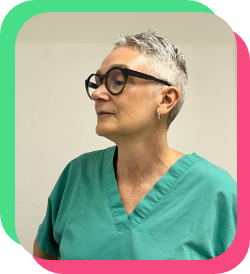

Maddalena
Sirellini
Conseguita nel 1996 Laurea in Medicina e Chirurgia presso l'Università degli Studi di Pavia
Conseguita nel 2000 specializzazione in Oftalmologia presso l'Università degli studi di Modena a pieni voti con lode
Principali attività svolte:
Attività ambulatoriale di primo livello presso strutture sia convenzionate sia private.
Attività ambulatoriale strumentale di secondo livello per diversi anni attività chirurgica, in particolare chirurgia palpebrale, endoscopica delle via lacrimali e tutt'ora assistenza e gestione negli interventi di cataratta e chirurgia retinica (Dr. Renzo Carpi, Dr. Claudio Panico, Dr.ssa Barbara Parolini)
Durante gli anni di formazione collaborazione attiva come assistente con diversi Specialisti di rilievo internazionale: Dr. Philippe Crozafon, Dr. Patrice De Laage, Dr. Nino De Casa
-
Piccole Figlie Hospital.
-
Studio Oculistico di Traversetolo.
-
Studio Oculistico Dottor Carpi.